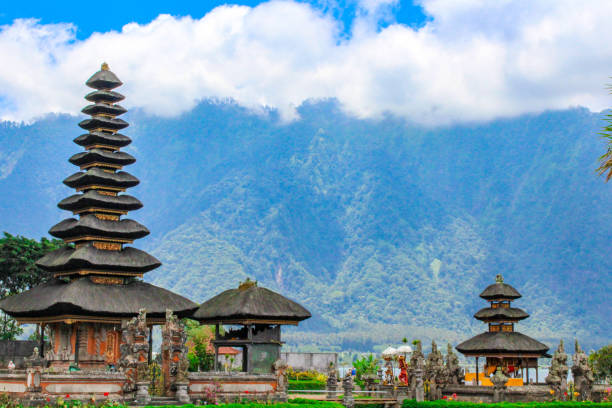

Kompleks Pura Ulun Danu Beratan
Kompleks Pura Ulun Danu Beratan memiliki lima kompleks pura dan satu stupa Buddha yang tersebar di kawasan indah ini.
Kompleks Pura
1. Pura Penataran Agung
Candi megah untuk memuja Tri Purusha Siwa: Siwa, Sadha Siwa, dan Parama Siwa. Menghadap ke selatan dengan pemandangan Danau Beratan.
2. Pura Prajapati
Terletak di bawah pohon beringin besar, menjadi tempat istana Dewi Durga.
3. Pura Dalem Purwa
Memiliki tiga pelinggih utama, termasuk keraton untuk pemujaan Dewi Durga dan Dewa Ludra.
4. Pura Taman Beji
Digunakan untuk upacara ngebejiang dan melasti menjelang Nyepi.
5. Pura Lingga Petak
Tempat pemujaan Dewa Wisnu dan Bhatari Dewi Danu, dengan sumur keramat di dalamnya.